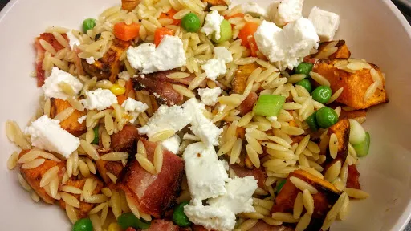

Sweet potato, bacon & orzo pasta salad
30 mins
Serves 4

Ingredients
-
2
large sweet potatoes, peeled and cubed
-
2
tbsp olive oil
-
250
g orzo pasta
-
2
mugs frozen peas
-
200
g streaky bacon
-
6
spring onions
-
1
tbsp fresh mint
-
100
g feta cheese
Instructions
- Preheat oven to 200°C
- Mix the sweet potato with the olive oil, season with salt and pepper and place on a baking tray. Put in the oven for 25 minutes
, or until tender and lightly browned.
- Meanwhile put the pasta in boiling water and simmer for 3 minutes
. Add peas for the last 2 minutes
. Drain and return to pan.
- Fry or grill bacon until crispy. Cut into bite sized pieces.
- Mix everything except the feta together and season with salt and pepper.
- Crumble the feta on top.
Nosh: Quick & Easy
Share